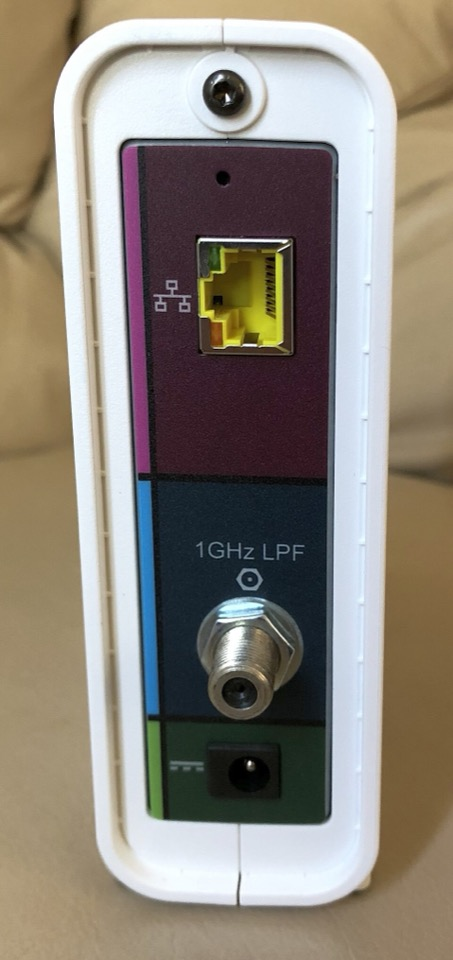
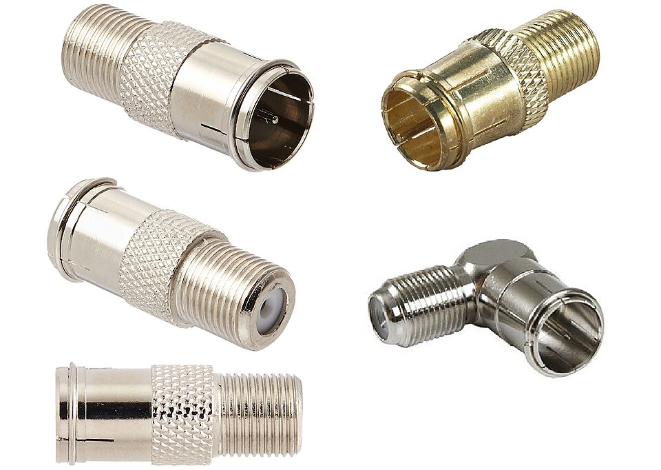

Find a fault on an HFC coax trainer
Identify the cable modem connections. Use a multimeter on disconnected spare coax and read a sample DOCSIS signal report.
Follow the cable into the house
Hybrid fibre coaxial (HFC) carries services over fibre for part of the route and coaxial cable for the last segment. A cable modem exchanges downstream and upstream signals on that coax. Ethernet takes data from the modem to the router. Review the DOCSIS signal readings and transmission lines.

Photo by F ASTILY, with cropping and perspective correction by Pittigrilli, resized with callouts. Original photo · CC BY-SA 4.0.
_with_connectors_on_rear.jpg){kind=link}

Photo by Eyreland, resized with callouts. Original photo · CC BY-SA 4.0.

Watch the approved connection box setup. Follow the coax into the box and the separate Ethernet lead to the customer router. Telstra’s nbn HFC guide on YouTube.
Test the three paths in a spare lead
Use a spare 75 Ω coax lead with both ends disconnected, a second known-good lead, a multimeter and ideally an F-type breakout or adapter so the contacts are easy to access. Keep customer and carrier cables connected as installed. Never put meter probes into a live wall outlet or modem.
- On resistance or continuity, touch the probe tips together and note the baseline. Visually check both connector bodies and centre conductors for looseness, damage and displaced braid.
- Probe centre to centre, shell to shell and centre to shell as three separate tests. A short spare lead typically has low end-to-end resistance on each conductor and an open circuit between the two. Keep your fingers clear of exposed tips when checking for an open.
- Repeat on the second lead. For a teaching fault, attach a removable shorting jumper between centre and shell on one end of a decommissioned lab lead using a breakout. The isolation reading changes. Remove the jumper and confirm that isolation is restored.
- Label results with which ends and contacts you tested. DC continuity catches certain opens and shorts. It cannot prove RF impedance, shielding quality under use, insertion loss or network signal levels.
Read a dispatch report
These are fictional readings for comparison. Real acceptable values depend on the equipment, channels and operator test limit. dBmV measures level relative to 1 mV. A dB SNR value describes signal quality. Read the manufacturer's explanation of downstream power, SNR and upstream power.
| Service snapshot | Downstream level / SNR | Upstream transmit power | Next check |
|---|---|---|---|
| Normal at 08:00 | +1 dBmV / 38 dB | 39 dBmV | Keep a baseline including locked channels and modem state. |
| Stalls at 19:00 | −7 dBmV / 28 dB | 51 dBmV | Look for changes across channels and common area faults. Escalate with times, modem lock, channel information and the comparison. |
| No Ethernet link after a router swap | Previous normal readings. Modem remains online. | Previous normal reading | Check the short Ethernet lead and router WAN port first. Verify with a wired service test after link returns. |
A splitter can add insertion loss. Interference or an upstream plant fault can cause superficially similar symptoms. The example values alone cannot identify which item to replace. Hand carrier-side testing to the authorised technician with their approved RF meter and procedure.
Keep three contact readings for the spare lead, a fault and restoration result, and a short escalation based on the sample. Draw the boundary between coax, the modem and Ethernet to the router.
Return to access-network support or HFC and other telecom job routes.